Steering Column: Service and Repair
Replacement
1. Disconnect the battery negative cable from the battery and then wait for at least 30 seconds.
2. Turn the steering wheel so that the front wheels can face straight ahead.
3. Push the pins (A).
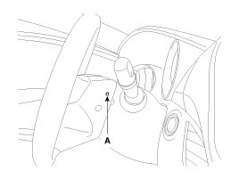
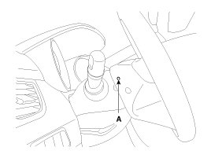
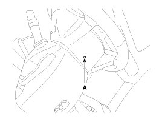
4. Disconnect the horn (B) & air bag (A) connector and then remove the air bag module.
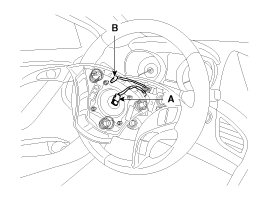
5. Loosen the lock nut (A), disconnect the connector (B) and then remove the steering wheel.
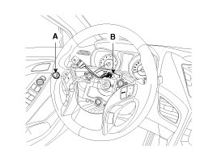
CAUTION:
Do not hammer on the steering wheel to remove it; it may damage the steering column.
6. Loosen the screw and then remove the steering column upper (A) and lower shroud (B).
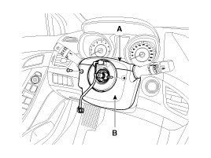
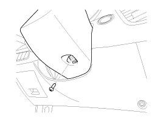
7. Disconnect the connector and then remove the clock spring (A).
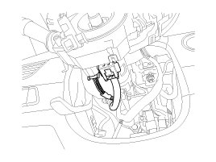
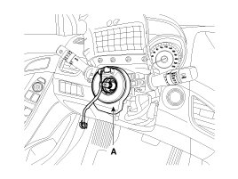
CAUTION:
When assembling set the center position by setting the marks between the clock spring and the cover into line. Make an array the mark (><) by turning the clock spring clockwise to the stop and then 2.0 revolutions counterclockwise.
8. Loosen the screw and then remove the multifunction switches (A).
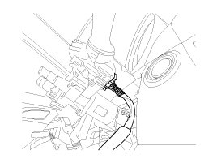
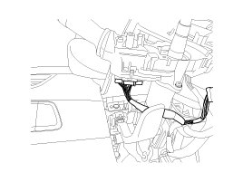
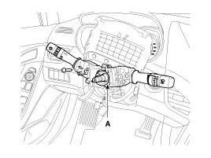
9. Remove the crash pad side cover (A), Fuse box cover and lower crash pad (B).
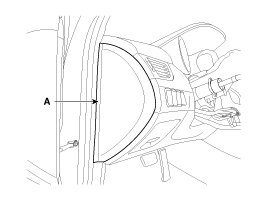
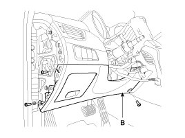
10. Loosen the bolts and then remove the reinforce panel (A).
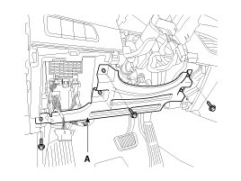
11. Loosen the bolt and then disconnect the universal joint assembly (A) from the pinion of the steering gear box.
Tightening torque :
32.4 - 37.3 N.m(3.3 - 3.8 kgf.m, 23.9 - 27.5 lb-ft)

CAUTION:
Lock the steering wheel in the straight ahead position to prevent the damage of the clock spring inner cable when you handle the steering wheel.
Change to the new bolt when assembling
12. Disconnect all connectors connected the steering column & EPS unit assembly.
13. Remove the shower duct (A).
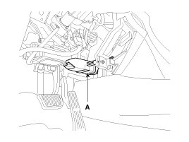
14. Remove the steering column & EPS unit assembly by loosening the mounting bolt (B) and nuts (A).
Tightening torque :
12.7 - 17.7 N.m(1.3 - 1.8 kgf.m, 9.4 - 13.0 lb-ft)
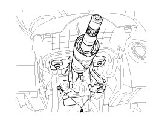
Tightening torque :
44.1 - 49.0 N.m(4.5 - 5.0 kgf.m, 32.5 - 36.2 lb-ft)
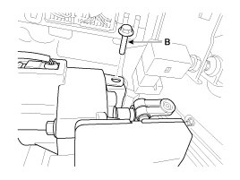
15. Installation is the reverse of the removal.
Disassembly
Key lock assembly
1. Make a groove on the head of special bolts (A) by a punch.
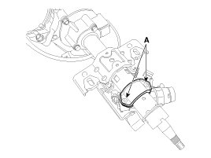
2. Loosen the special bolt using a screw driver and then remove the key lock assembly from the steering column assembly.
3. Reassembly is the reverse of the disassembly.
Universal joint assembly
1. Loosen the bolt (A) and then disconnect the universal joint assembly from the steering column assembly.
Tightening torque :
53.9 - 63.7N.m (5.5 - 6.5kgf.m, 39.8 - 47.0lb-ft)
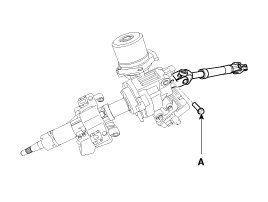
2. Reassembly is the reverse of the disassembly.
Inspection
1. Check the steering column for damage and deformation.
2. Check the steering column for damage and deformation.
3. Check the join bearing for damage and wear.
4. Check the tilt bracket for damage and cracks.
5. Check the key lock assembly for proper operation and replace it if necessary.